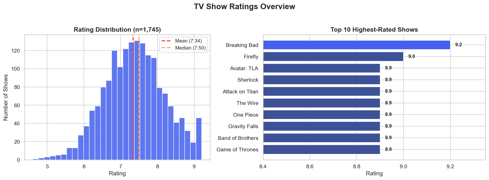
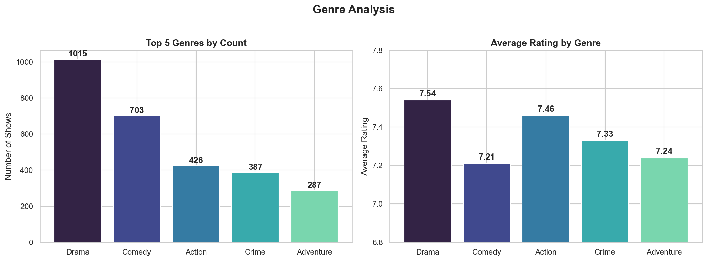
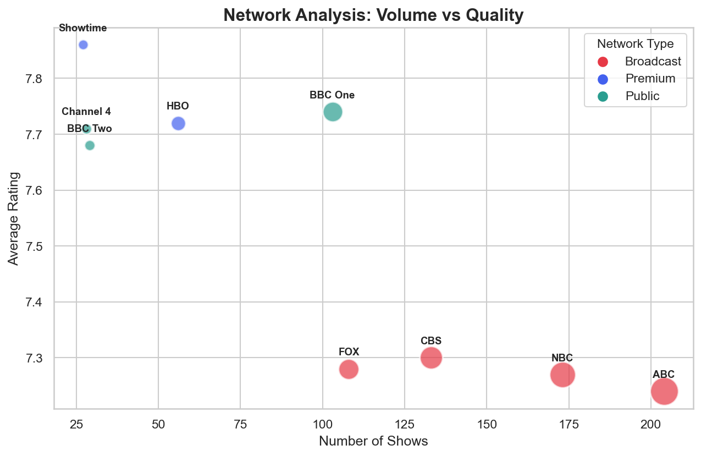
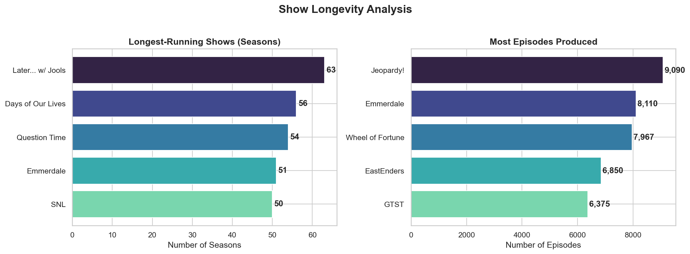
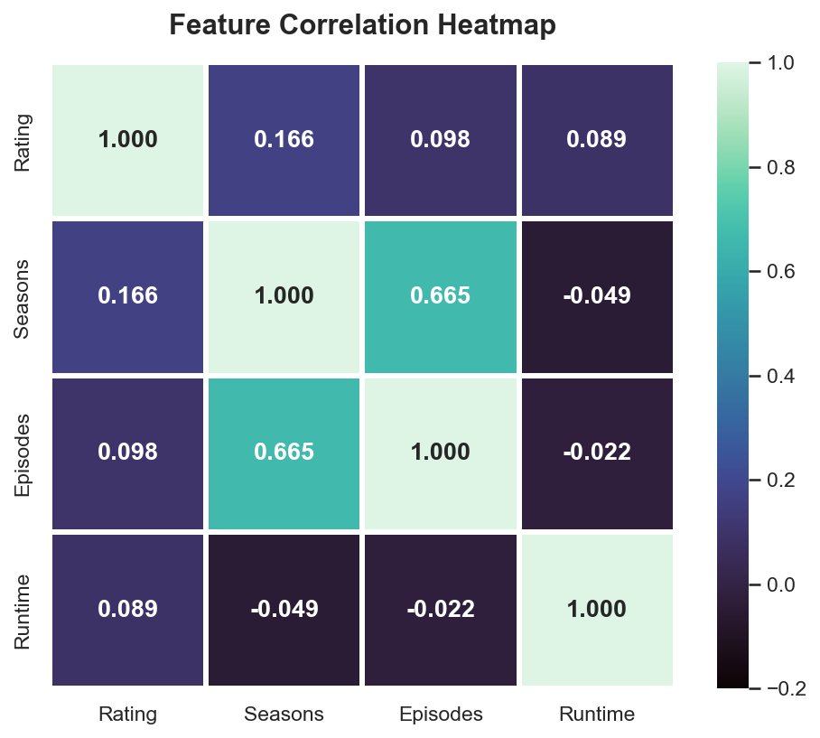

Visualizations

Ratings follow a left-skewed distribution centered around 7.3-7.5. Breaking Bad leads at 9.2/10, with HBO dominating the top 10.

Drama leads in both volume (1,015 shows, 40%) and average quality (7.54). Comedy is second in count but ranks lower in ratings.

Clear volume-vs-quality trade-off: broadcast networks (ABC, NBC) produce high volume at ~7.25 avg, while premium networks (Showtime, HBO) achieve 7.7+ with smaller catalogs.

Scripted content dominates at 59.8% of shows and the highest avg rating (7.48). Reality TV significantly underperforms at 6.39 avg.

Game shows and soap operas dominate longevity metrics. Jeopardy! leads with 9,090 episodes. Daily/weekly formats enable massive episode counts.

Seasons and episodes are strongly correlated (0.665), but rating is largely independent of length or runtime—content quality matters more than quantity.
Key Findings
Premium Wins on Quality
HBO, Showtime, and BBC consistently rate 7.7+. The Showtime model (27 shows, 7.86 avg) outperforms ABC (204 shows, 7.24 avg) on quality.
HBO, Showtime, and BBC consistently rate 7.7+. The Showtime model (27 shows, 7.86 avg) outperforms ABC (204 shows, 7.24 avg) on quality.
Scripted Drama Dominates
Scripted content outperforms reality TV by 17% in ratings (7.48 vs 6.39). Drama is the most reliable genre for quality content.
Scripted content outperforms reality TV by 17% in ratings (7.48 vs 6.39). Drama is the most reliable genre for quality content.
Quality Over Quantity
Rating is independent of episode count (r=0.098) and runtime (r=0.089). Individual episode quality matters more than series length.
Rating is independent of episode count (r=0.098) and runtime (r=0.089). Individual episode quality matters more than series length.
Technologies Used
Python 3.13
pandas
NumPy
Matplotlib
Seaborn
Jupyter Notebook